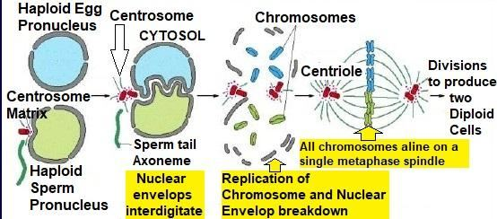

The universe is expanding, which causes darkness. If the universe were not expanding, the light from all the stars would eventually reach the Earth. Once the light of a star had arrived, it would continue to reach us forever. In that case, every line of sight would end on the surface of a star, and the entire sky would appear as bright as the Sun. Scientists calculate that if the universe were not expanding, the sky would be forty thousand times brighter than the Sun at noon. The intensity of light is reduced to darkness because the universe is expanding. Meanwhile, we have a Sun that provides seven-colored light of perfect intensity for our color-vision eyes: ―It is God Who has made the Night for you that you may rest therein and the days as that which helps to see.‖ It is God Who has made for you the earth as a resting place and the sky as a canopy, and has given you shape, and made your shapes beautiful, and has provided for you sustenance of things pure and good; such is God your Lord— so Glory to God, the Lord of the universes! He is the Living. There is no god but He. Call upon Him giving Him sincere devotion. Praise be to God, Lord of the universes! Say: I have been forbidden to invoke those, whom ye invoke besides God, seeing that the clear verses have come to me from my Lord, and I have been commanded to bow to the Lord of the universes.
মহাবিশ্ব প্রসারিত হচ্ছে, যা অন্ধকারের কারণ। মহাবিশ্ব সম্প্রসারিত না হলে, সমস্ত নক্ষত্রের আলো শেষ পর্যন্ত পৃথিবীতে পৌঁছে যেত। একটি নক্ষত্রের আলো একবার এসে গেলে তা আমাদের কাছে চিরকাল পৌঁছাতে থাকবে। সেক্ষেত্রে, প্রতিটি দৃশ্যের রেখা একটি নক্ষত্রের পৃষ্ঠে শেষ হবে এবং সমগ্র আকাশ সূর্যের মতো উজ্জ্বল দেখাবে। বিজ্ঞানীরা হিসাব করেন যে মহাবিশ্ব সম্প্রসারিত না হলে দুপুরের দিকে আকাশ সূর্যের চেয়ে চল্লিশ হাজার গুণ বেশি উজ্জ্বল হতো। আলোর তীব্রতা অন্ধকারে হ্রাস পেয়েছে কারণ মহাবিশ্ব প্রসারিত হচ্ছে। এদিকে, আমাদের কাছে একটি সূর্য রয়েছে যা আমাদের বর্ণ-দৃষ্টি চোখের জন্য নিখুঁত তীব্রতার সাত রঙের আলো প্রদান করে: "ঈশ্বরই তোমাদের জন্য রাত্রি করেছেন যাতে তোমরা তাতে বিশ্রাম করতে পার এবং দিনগুলিকে দেখতে সাহায্য করে।" তিনিই ঈশ্বর যিনি তোমাদের জন্য পৃথিবীকে বিশ্রামের স্থান এবং আকাশকে ছাউনির মতো করেছেন, এবং তোমাদের আকৃতি দিয়েছেন, এবং তোমাদের জন্য সুন্দর আকৃতি দিয়েছেন; তিনিই আল্লাহ তোমাদের পালনকর্তা, তাই মহাবিশ্বের পালনকর্তা আল্লাহর মহিমা! তিনিই জীবিত। তিনি ছাড়া কোন উপাস্য নেই। তাকে আন্তরিক ভক্তি দিয়ে তাকে ডাকুন। বিশ্বজগতের পালনকর্তা আল্লাহর প্রশংসা! বলুন, আমাকে নিষেধ করা হয়েছে তাদেরকে ডাকতে, যাদেরকে তোমরা আল্লাহ ব্যতীত ডাকো, কারণ আমার কাছে আমার রবের পক্ষ থেকে সুস্পষ্ট আয়াত এসেছে এবং আমাকে আদেশ করা হয়েছে বিশ্বজগতের প্রতিপালকের কাছে সেজদা করার জন্য।
The crust that supports us is stable, productive, and peaceful. It has made the Earth a perfect resting place, producing nourishing food, and storing pure mineral water for drinking, as the verses describe: ―…and has provided for you sustenance of things pure and good‖. The sky of the Earth acts as a canopy, consisting of the magnetosphere and layered atmosphere, which protect us from solar winds, harmful radiation, and extreme cold and heat. This canopy has also contributed to making our shapes beautiful, as the verses describe: ―…and the sky as a canopy, and has given you shape, and made your shapes beautiful…‖ Allah could have made us capable of withstanding solar winds, harmful radiation, and extreme temperatures. However, in that case, we would have thick, hairy skins, and tough physiques like other animals. Instead, Allah created a protective canopy and made our forms graceful, light, and sensitive.
আমাদের সমর্থনকারী ভূত্বক স্থিতিশীল, উত্পাদনশীল এবং শান্তিপূর্ণ। এটি পৃথিবীকে একটি নিখুঁত বিশ্রামের জায়গা করে তুলেছে, পুষ্টিকর খাদ্য উত্পাদন করে এবং পানীয়ের জন্য বিশুদ্ধ খনিজ জল সঞ্চয় করে, যেমন আয়াত বর্ণনা করে: "...এবং তোমাদের জন্য বিশুদ্ধ ও ভালো জিনিসের ব্যবস্থা করেছে"। পৃথিবীর আকাশ চুম্বকমণ্ডল এবং স্তরযুক্ত বায়ুমণ্ডল নিয়ে গঠিত একটি ছাউনি হিসাবে কাজ করে, যা আমাদের সৌর বায়ু, ক্ষতিকারক বিকিরণ এবং চরম ঠান্ডা এবং তাপ থেকে রক্ষা করে। এই শামিয়ানাটি আমাদের আকারগুলিকে সুন্দর করতেও অবদান রেখেছে, যেমনটি আয়াতগুলি বর্ণনা করে: “…এবং আকাশ একটি চাঁদোয়া হিসাবে, এবং আপনাকে আকৃতি দিয়েছে, এবং আপনার আকারগুলিকে সুন্দর করেছে…” আল্লাহ আমাদের সৌর বায়ু, ক্ষতিকারক বিকিরণ এবং চরম তাপমাত্রা সহ্য করতে সক্ষম করতে পারতেন। যাইহোক, সেই ক্ষেত্রে, আমাদের অন্যান্য প্রাণীর মতো ঘন, লোমযুক্ত চামড়া এবং শক্ত শরীর থাকবে। পরিবর্তে, আল্লাহ একটি প্রতিরক্ষামূলক ছাউনি তৈরি করেছেন এবং আমাদের রূপগুলিকে করুণাময়, হালকা এবং সংবেদনশীল করে তুলেছেন।
It is He Who has created you from turabin (zygote), then from a drop (blastocyst), then from a leech (leech like clinging embryo), then does he get you out as a child, then lets you reach your age of full strength, then lets you become old though of you there are some who die before—and lets you reach a term appointed in order that you may learn wisdom. It is He Who gives life and death; and when He decides upon an affair, He says to it, ―Be‖, and it is.
তিনিই তোমাদের সৃষ্টি করেছেন তুরাবিন (জাইগোট) থেকে, তারপর একটি ফোঁটা (ব্লাস্টোসিস্ট) থেকে, তারপর জোঁক থেকে (আঁকড়ে থাকা ভ্রূণের মতো জোঁক), তারপর তিনি আপনাকে শিশু অবস্থায় বের করেন, তারপর আপনাকে পূর্ণ শক্তির বয়সে পৌঁছাতে দেন, তারপর আপনাকে বৃদ্ধ হতে দেন যদিও তোমাদের মধ্যে কেউ কেউ আগে মারা যায়- এবং আপনাকে একটি নির্দিষ্ট মেয়াদে পৌঁছাতে দেন যাতে আপনি জ্ঞান অর্জন করতে পারেন। তিনিই জীবন ও মৃত্যু দান করেন; এবং যখন তিনি কোন বিষয়ে সিদ্ধান্ত নেন, তখন তিনি তাকে বলেন, 'হও' এবং তা হয়ে যায়।
The word "turab" (the trilateral root of "turabin") is commonly translated as "soil," "dust," or "earth." However, according to the dictionary, it also means "to collect," "raise," "well-matched," or "deposit." In the context of the verse, "turabin" could be interpreted as "zygote," referring to the stage where the sperm and ovum are collected, fused, and raised as a well-matched deposit of genetic material. Therefore, the term "zygote" may be referred to as "turabin" in the Quran. Formation of one‘s body begins when the fusion of sperm and ovum produces a zygote. The specific genome thus formed plays a crucial role in developing one‘s body with hereditary and other traits. FIGURE 40.2: Fusion of Sperm and Ovum

চিত্র 40_2 / Figure 40_2
শব্দ "তুরাব" ("তুরাবিন" এর ত্রিপক্ষীয় মূল) সাধারণত "মাটি," "ধুলো" বা "পৃথিবী" হিসাবে অনুবাদ করা হয়। যাইহোক, অভিধান অনুসারে, এর অর্থ "সংগ্রহ করা," "উত্থাপন করা," "ভালভাবে মিলে যাওয়া" বা "আমানত করা।" আয়াতের প্রেক্ষাপটে, "তুরাবিন" কে "জাইগোট" হিসাবে ব্যাখ্যা করা যেতে পারে, যেখানে শুক্রাণু এবং ডিম্বাণু সংগ্রহ করা হয়, একত্রিত হয় এবং জেনেটিক উপাদানের একটি সুসংগত আমানত হিসাবে উত্থাপিত হয়। তাই, "জাইগোট" শব্দটিকে কুরআনে "তুরাবিন" হিসাবে উল্লেখ করা যেতে পারে। যখন শুক্রাণু এবং ডিম্বাণুর ফিউশন একটি জাইগোট তৈরি করে তখন একজনের দেহের গঠন শুরু হয়। এইভাবে গঠিত নির্দিষ্ট জিনোম বংশগত এবং অন্যান্য বৈশিষ্ট্যের সাথে একজনের দেহের বিকাশে একটি গুরুত্বপূর্ণ ভূমিকা পালন করে। চিত্র 40.2: শুক্রাণু এবং ডিম্বাণুর সংমিশ্রণ
চিত্র 40_2 / Figure 40_2
The human body is so advanced that it is not meant to age; all of its cells are periodically replaced. The body has the ability to produce all kinds of medicines and repair itself, and it should even be able to regenerate lost parts. However, we experience aging in this earthly life due to codes introduced in our genomes. The codes in the genome regulate the process of aging, making a person young and eventually old over time. Allah determines the length of one's life and aligns the genetic material in the zygote accordingly. However, some may die at an early age due to other factors of fate. Above verses say, ―when He decides upon an affair, He says to it, "Be", and it is‖. Every subatomic particle acts according to its design. However, many of the force fields on which these particles depend are extended elementary souls (ruhs) of Allah (as discussed in Chapter 1). Allah sustains all subatomic particles, and they are devotedly obedient to Him. Therefore, anything can occur on His command: 'Be.' In the context of the foregoing verses, this means that Allah can increase or decrease a person's life at any time, even though the human genome is programmed to cause aging and death within a predetermined time. The matching of genetic materials is done, and one is born with a specific genome to fulfill the duration of one's life. However, Allah is the Author of the genome, and He has control over every subatomic particle. He can change the required genetic codes at His command of 'Be' and can increase or decrease one's life instantly.
মানুষের শরীর এতই উন্নত যে বয়স বোঝানো হয় না; এর সমস্ত কোষ পর্যায়ক্রমে প্রতিস্থাপিত হয়। শরীরের সব ধরণের ওষুধ তৈরি করার এবং নিজেকে মেরামত করার ক্ষমতা রয়েছে এবং এমনকি এটি হারিয়ে যাওয়া অংশগুলিকে পুনরুত্থিত করতে সক্ষম হওয়া উচিত। যাইহোক, আমাদের জিনোমে প্রবর্তিত কোডের কারণে আমরা এই পার্থিব জীবনে বার্ধক্য অনুভব করি। জিনোমের কোডগুলি বার্ধক্যের প্রক্রিয়াকে নিয়ন্ত্রণ করে, একজন ব্যক্তিকে তরুণ করে এবং অবশেষে সময়ের সাথে সাথে বৃদ্ধ করে। আল্লাহ একজনের জীবনের দৈর্ঘ্য নির্ধারণ করেন এবং সেই অনুযায়ী জাইগোটের জিনগত উপাদানগুলিকে সারিবদ্ধ করেন। তবে ভাগ্যের অন্যান্য কারণের কারণে অল্প বয়সেই কেউ কেউ মারা যেতে পারে। উপরের আয়াতে বলা হয়েছে, "যখন তিনি কোন বিষয়ে সিদ্ধান্ত নেন, তখন তিনি তাকে বলেন, "হও" এবং তা হয়ে যায়। প্রতিটি উপপারমাণবিক কণা তার নকশা অনুযায়ী কাজ করে। যাইহোক, অনেক বল ক্ষেত্র যার উপর এই কণাগুলি নির্ভর করে আল্লাহর বর্ধিত প্রাথমিক আত্মা (রুহস) (অধ্যায় 1 এ আলোচনা করা হয়েছে)। আল্লাহ সমস্ত উপ-পরমাণু কণাকে টিকিয়ে রাখেন, এবং তারা তাঁর প্রতি একনিষ্ঠভাবে বাধ্য। অতএব, তাঁর আদেশে যা কিছু ঘটতে পারে: 'হও।' পূর্বোক্ত আয়াতের পরিপ্রেক্ষিতে, এর অর্থ হল যে কোনো সময় আল্লাহ একজন ব্যক্তির জীবন বৃদ্ধি বা হ্রাস করতে পারেন, যদিও মানুষের জিনোম একটি পূর্বনির্ধারিত সময়ের মধ্যে বার্ধক্য এবং মৃত্যু ঘটাতে প্রোগ্রাম করা হয়েছে। জেনেটিক উপাদানের মিল করা হয়, এবং একজনের জীবনের সময়কাল পূরণ করার জন্য একটি নির্দিষ্ট জিনোম নিয়ে জন্ম হয়। যাইহোক, আল্লাহ জিনোমের লেখক, এবং প্রতিটি উপ-পরমাণু কণার উপর তার নিয়ন্ত্রণ রয়েছে। তিনি তাঁর 'হও' নির্দেশে প্রয়োজনীয় জেনেটিক কোডগুলি পরিবর্তন করতে পারেন এবং তাত্ক্ষণিকভাবে একজনের জীবন বৃদ্ধি বা হ্রাস করতে পারেন।
See thou not those that dispute concerning the verses of God how are they turned away—those who reject the Book and with which We sent our apostles? But soon shall they know when the yokes are round their necks, and the chains. They shall be dragged along in the boiling fetid fluid, then in the Fire shall they be burned, then shall it be said to them: "Where are the (deities) to which ye gave part-worship in derogation of God?" They will reply: "They have left us in the lurch. Nay, we invoked not anything before." Thus, does God leave the Unbelievers to stray. That was because ye were wont to rejoice on the earth in things other than the Truth, and that ye were wont to be insolent: Enter ye the gates of hell; abide forever in it; and wretched is abode of the arrogant! Section 14 of Chapter 40 [Verse 77-78]: Sanctioning of a Miraculous Sign
তুমি কি দেখ না, যারা আল্লাহর আয়াত নিয়ে বিতর্ক করে তারা কিভাবে বিমুখ হয়- যারা কিতাবকে প্রত্যাখ্যান করেছে এবং যা দিয়ে আমরা আমাদের রসূলদের পাঠিয়েছি? কিন্তু শীঘ্রই তারা জানতে পারবে কখন তাদের গলায় জোয়াল এবং শিকল। তাদেরকে টেনে নিয়ে যাওয়া হবে ফুটন্ত ভ্রূণের মধ্যে, অতঃপর আগুনে পুড়িয়ে ফেলা হবে, অতঃপর তাদেরকে বলা হবে, কোথায় তারা (দেবতা) যাদেরকে তোমরা আল্লাহর অবমাননা করে আংশিক উপাসনা করেছিলে? তারা উত্তরে বলবেঃ "তারা আমাদেরকে বিপথগামী করে রেখে গেছে। বরং আমরা এর আগে কোন কথাই ডাকিনি।" সুতরাং, ঈশ্বর কি অবিশ্বাসীদের বিপথগামী হতে ছেড়ে দেন? এটা এজন্য যে, তোমরা পৃথিবীতে সত্য ব্যতীত অন্য কিছুতে আনন্দ করতে এবং উদ্ধত হতে চাও না। তোমরা জাহান্নামের দরজা দিয়ে প্রবেশ কর। তাতে চিরকাল থাকবেন; আর অহংকারীদের আবাসস্থল! অধ্যায় 40 এর অধ্যায় 14 [পদ 77-78]: একটি অলৌকিক চিহ্ন অনুমোদন
So, persevere in patience; for the promise of God is true. And whether We show thee some part of what We promise them, or We take thy soul, it is to Us that they shall return. We did aforetime send apostles before thee; of them there are some whose story We have related to thee, and some whose story We have not related to thee. It was not for any apostle to bring a sign except by the leave of God. But when the Commandment of God comes, the matter will be decided in truth, and the followers of false-hood will then be lost.
অতএব, ধৈর্য্য ধারণ কর; কারণ ঈশ্বরের প্রতিশ্রুতি সত্য। আর আমরা তাদের প্রতিশ্রুতির কিছু অংশ তোমাকে দেখাই বা তোমার প্রাণ হরণ করি, তবে তারা আমাদের কাছেই প্রত্যাবর্তন করবে। আমরা ইতিপূর্বে আপনার পূর্বে রসূল প্রেরণ করেছি। তাদের মধ্যে এমন কিছু আছে যাদের কাহিনী আমরা আপনার সাথে বর্ণনা করেছি এবং কিছু যাদের কাহিনী আমরা আপনার সাথে বর্ণনা করিনি। আল্লাহর হুকুম ব্যতীত কোন নিদর্শন নিয়ে আসা কোন রসূলের জন্য ছিল না। কিন্তু যখন আল্লাহর হুকুম আসবে তখন বিষয়টি সত্যের সাথে ফয়সালা হবে এবং মিথ্যার অনুসারীরা তখন হারিয়ে যাবে।
It is God Who made cattle for you that you may use some for riding and some for food, and there are advantages in them for you that you may through them attain to any need in your hearts, and on them and on ships you are carried. And He shows you His signs; then which of the signs of God will ye deny?
আল্লাহই তোমাদের জন্য চতুষ্পদ জন্তু সৃষ্টি করেছেন যাতে তোমরা কিছুকে চড়ার জন্য ব্যবহার করতে পার এবং কিছুকে খাদ্যের জন্য ব্যবহার করতে, এবং তাদের মধ্যে তোমাদের জন্য সুবিধা রয়েছে যাতে তোমরা তাদের দ্বারা তোমাদের হৃদয়ের যে কোন প্রয়োজন পূরণ করতে পার এবং তাদের ও জাহাজে করে তোমাদের বহন করা হয়। আর তিনি তোমাদেরকে তাঁর নিদর্শন দেখান। তাহলে তোমরা আল্লাহর কোন কোন নিদর্শনকে অস্বীকার করবে?
Do they not travel through the earth and see what the end of those before them was? They were more numerous than these and superior in strength and in the traces in the land, yet all that they accomplished was of no profit to them, for when their apostles came to them with clear signs, they exulted in such knowledge as they had; but that very (punishment), at which they were wont to scoff, hemmed them in. So, when they saw Our punishment, they said: "We believe in God, the one God, and we reject the partners we used to join with Him." But their Faith could not avail them when they saw Our punishment—this has been way of God in dealing with His servants; and there the disbelievers lost utterly!
তারা কি পৃথিবীতে ভ্রমণ করে না এবং দেখে না যে তাদের পূর্ববর্তীদের পরিণাম কি হয়েছে? তারা তাদের চেয়ে অনেক বেশি ছিল এবং শক্তিতে এবং দেশে চিহ্নগুলিতে উচ্চতর ছিল, তবুও তারা যা কিছু করেছিল তাতে তাদের কোন লাভ ছিল না, কারণ যখন তাদের প্রেরিতরা তাদের কাছে স্পষ্ট নিদর্শন নিয়ে এসেছিল, তখন তারা তাদের জ্ঞানে উল্লাস করেছিল; কিন্তু সেই (শাস্তি), যেটা নিয়ে তারা উপহাস করতে চাইছিল, সেটাই তাদের আচ্ছন্ন করে দিল। অতঃপর তারা যখন আমাদের শাস্তি দেখতে পেল, তখন বলল, আমরা এক আল্লাহকে বিশ্বাস করি এবং আমরা তাঁর সাথে শরীকদেরকে প্রত্যাখ্যান করি। কিন্তু তাদের ঈমান তাদের কোন কাজে আসেনি যখন তারা আমাদের শাস্তি দেখেছিল-বান্দাদের সাথে আচরণ করার ক্ষেত্রে এটাই আল্লাহর পথ। এবং সেখানে কাফেররা সম্পূর্ণভাবে হেরে গেল!